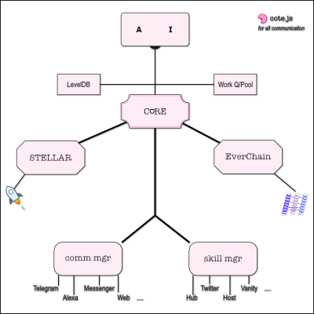

This document contains instructions for developers of Everlife that want to setup and begin work on the node. For everyone else a far more useful read would be this one.
The node runs in a docker container and will self download and install
redis and the core packages.
Because we have multiple private repositories in Everlife, in order to access them we need to authenticate ourselves.
Needing to authenticate ourselves multiple times for multiple downloads
and updates is tiresome so we use ssh access. If you can access Github-via-ssh
run.sh
will automatically pick up the ssh settings and use them to download the
repositories.
./run.sh setup && ./run.sh avatarAnd you're good to go!
$> run.sh <command>
where:
<command> == One of the following:-
setup : Setup requirements for the avatar to start (docker & node modules)
avatar: Start the avatar
enter : Enter running node container to examine and execute commandsProcesses are managed by pm2. The logs for processes
started will be available in the logs directory. They are useful for
debugging/troubleshooting.
This package code will download and manage all the dependencies needed to run the avatar, install the skills, communicate with the user and so on. Configuration, updates, and troubleshooting can all take place from here.
This package itself can be thought of as the core of the avatar - it keeps the rest of the avatar (the AI brain, the immortal feed, the database etc) alive and stable. That is it's main responsibility (after all - it has to live forever).

For this to work, it delegates all other work to different processes (a.l.a Erlang's supervisor trees).
These core processes include:
Because all communication happens via microservices in a docker container, for more advanced uses we can deploy services on multiple machines and have scale-out.